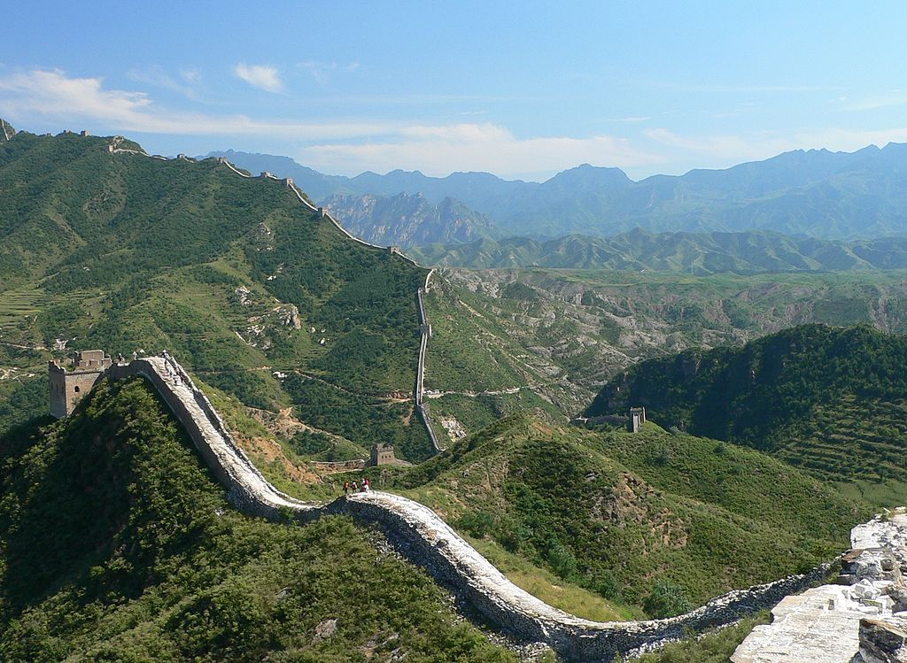
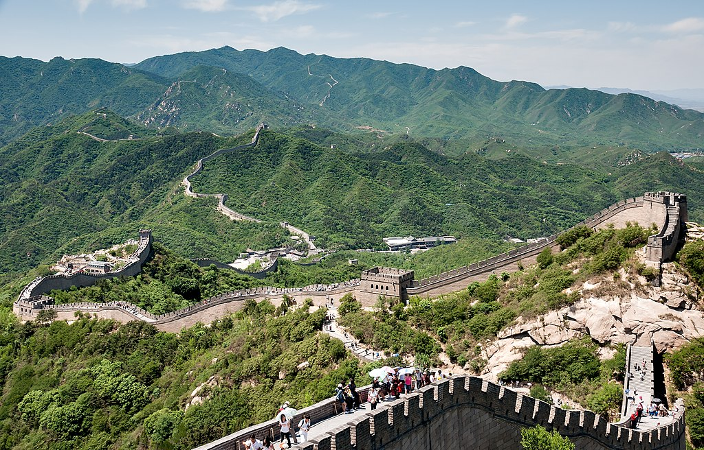
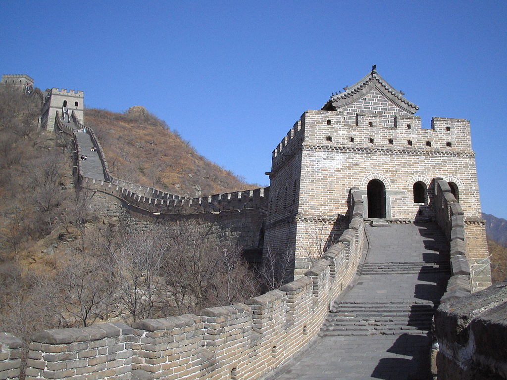

חומת סין

ארץ: סין עיר: שָׁאנְהָאיגְווָאן - לופ נור תאריך בנייה: 900 לפנה"ס
החומה גדולה של סין היא מערכת ביצורים מאדמה, מלבנים ומאבנים בצפון סין, שנבנתה ושופצה פעמים רבות בין המאה ה-5 לפנה"ס למאה ה-16. מטרתה הייתה להגן על האימפריה הסינית מפני פשיטות של ברברים ממונגוליה וממנצ'וריה, שהתרחשו פעמים רבות במהלך ההיסטוריה הסינית.


מאז המאה ה-5 לפנה"ס נבנו כמה חומות שזכו לתואר החומה הגדולה. אחת המפורסמות שבהן הייתה חומה שנבנתה בין השנים 220 ל-206 לפנה"ס על ידי קיסר סין הראשון, צ'ין שה-חואנג משושלת צ'ין, שממנה נותרו שרידים מעטים בלבד. החומה ששרדה עד ימינו נבנתה בתקופת שושלת מינג במהלך המאה ה-15 והמאה ה-16.